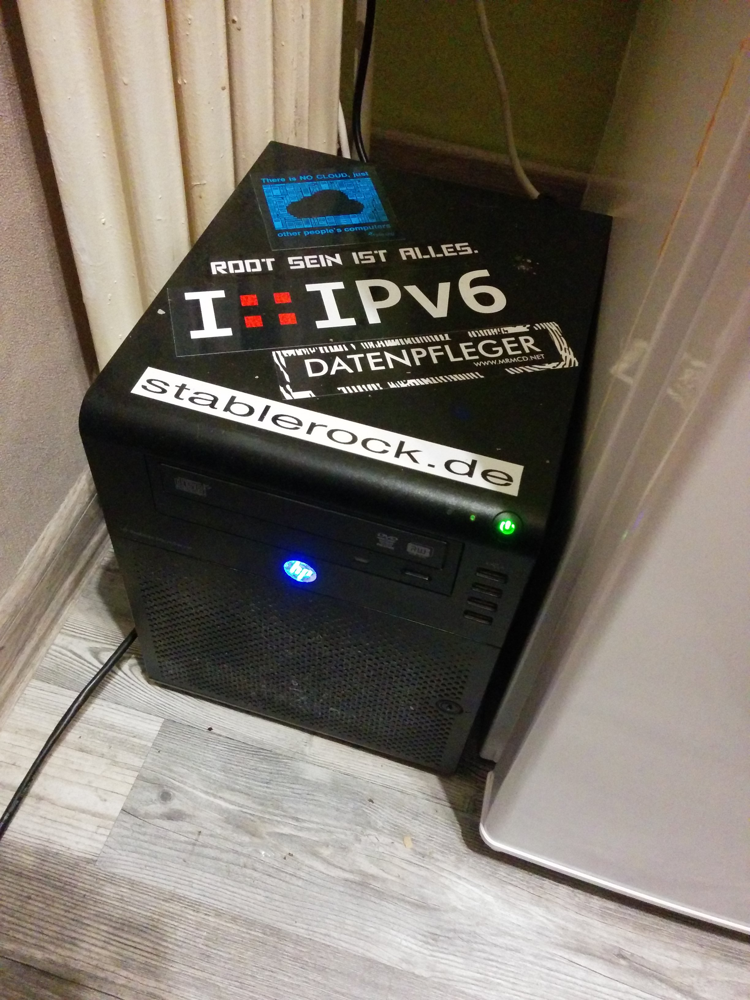

Server(geschichte)
Auf dieser Seite eine kleine Übersicht für die Nachwelt auf welchen Servern die Domain stablerock.de schon hausiert hat und welche Konfigurationen dort so verwendet wurden. Viel Spass beim lesen.
Strato (2012-2016)
Begonnen hat alles mit einem kleinen vServer bei Strato. Das war damals der kleinste den es gab. Ich glaube 50GB Speicherplatz, 1GB RAM und eine vCPU. Später wurde das dann mal upgrgraded. Der "Hypervisor" war keiner. Es war ein Virtuozzo Container. Der nette Nebeneffekt war, dass man sich nicht um Kernelupdates kümmern musste. Als Betriebssytem kam Ubuntu 12.04LTS zum Einsatz. Das hätte bis April 2017 durchlaufen können. Benutzt haben wir auf dem Server vor allem den Mailserver, einen XMPP-Server(man konnte noch mit Leuten von Google-Talk chatten, wie cool das war...) und, damals noch, ownCloud. Die TLS-Zertifikate haben wir am Anfang noch von Cacert bezogen, bis Let's Encrypt kam. Den Mailserver habe ich damals anhand des Tutorials "der perfekte Mailserver" von Högi gebaut. Heute finde ich den ganz und gar nicht perfekt und ich überlege ob ich mal nen Beitrag a la "mein perfekter Mailserver" schreibe. Die Performance und Zuverlässigkeit bei Strato war nie ein Problem ich war sehr zufrieden mit der angebotenen Leistung. Wenn Kernel-updates anstanden wurde dies immer vorher angekündigt.
Contabo (2016-2018)
Ein Jahr vor Ende des Supports von Ubuntu 12.04 habe ich mich dann umgesehen was als nächstes kommen sollte. Ich wollte den Server möglichst wartungsarm und zuverlässig haben und für den Fall, dass ich mal nicht soviel Lust auf administriererei habe, es einfach läuft. Ich habe mich dann für CentOS 7 entschieden. Das war zwar zu dem Zeitpunkt schon 1,5 Jahre alt, bot aber Support bis 2023. Ebenfalls wollte ich ein System mit systemd haben welches ich, entgegen der Meinung vieler anderer, ein echt freshes piece of software finde. Meinen epischen Respect an Mr. Poettering! Den Mailserver hab ich from Scratch gemacht und die alten MySQL-Statements wiederverwendet. Eingesetzte Software war Postfix als MTA und Dovecot als MDA. Nach der Einrichtung lief der Server größtenteils einfach so durch und ich habe nicht viel geändert.
HP Microserver N40L (2018-)
Entgegen meiner Sorge ich könnte den Spass am Gerät verlieren und der Server muss bis 2023 durchlaufen hatte ich Ende '17/Anfang '18 tierisch Bock auf was neues. Ich dachte mir das ich gar nicht sooo der Herr meiner Daten bin. Selbst wenn ich einen eigenen Server betreibe, steht er ja doch im Rechenzentrum zentralisiert bei vielen anderen. So wirklich cool dezentral a la Hackerethik fand ich das nicht. Ein effizienter Weg die Daten zu verschlüsseln ist mir auch nicht in den Sinn gekommen. Außerdem fand ich den Gedanken faszinierend ein Häppchen Internet in der eigenen Wohnung stehen zu haben. Also beschloss ich mir einen Server zu kaufen (genau nicht mieten, erstmals kaufen) und diesen selbst zu betreiben. Ich hatte am Anfang bedenken ob man mit einem einfachen DSL-Anschluss(25Mbit down/5Mbit up) einen Server betreiben kann. Auch musste ich es irgendwie hinbekommen, dass der Server mit einer statischen IP nach außen hin auftritt. Die Bandbreite erweist sich als ausreichend und das mit der öffentlichen IP habe ich auch hinbekommen. Als Betriebssystem verwende ich jetzt FreeBSD, erstmals kein Linux. Ich bin sehr zufrieden und hab viel Spass am Gerät. Als Mailserver ist nun ein Gespann aus OpenSMTPD und Dovecot im Einsatz. Dadurch, dass der Server physikalisch für mich erreichbar ist, ist es auch möglich alle Daten zu verschlüsseln.
Bild vom N40L